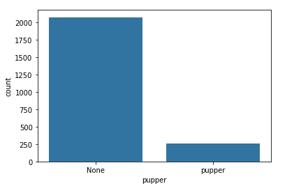
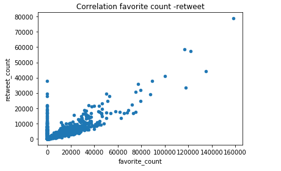
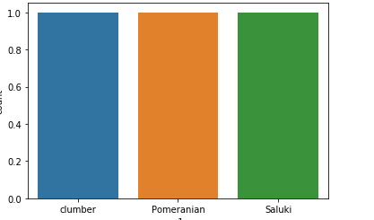

Act-report
I consolidate all the information in a single dataframe using the merge function.
res_api.info()
The frame contains the following information.
Data columns (total 28 columns): tweet_id 2331 non-null int64 timestamp 2331 non-null datetime64[ns, UTC] source_x 2331 non-null object expanded_urls 2272 non-null object rating_numerator 2331 non-null int64 rating_denominator 2331 non-null int64 name 2331 non-null object pupper 2331 non-null object jpg_url 2059 non-null object img_num 2059 non-null float64 p1 2059 non-null object p1_conf 2059 non-null float64 p1_dog 2059 non-null object p2 2059 non-null object p2_conf 2059 non-null float64 p2_dog 2059 non-null object p3 2059 non-null object p3_conf 2059 non-null float64 p3_dog 2059 non-null object created_at 2331 non-null datetime64[ns, UTC] favorite_count 2331 non-null int64 id 2331 non-null int64 is_quote_status 2331 non-null bool retweet_count 2331 non-null int64 retweeted 2331 non-null bool source_y 2331 non-null object user_id 2331 non-null objec
I decided to define a rating attribute.
res_api['rating'] = res_api['rating_numerator'] / res_api['rating_denominator']
res_api.sample(3)
 Pupper is the smallest category
There is a strong correlation between retweets and favorites.

The 3 best rated classes of dogs according to p1:
